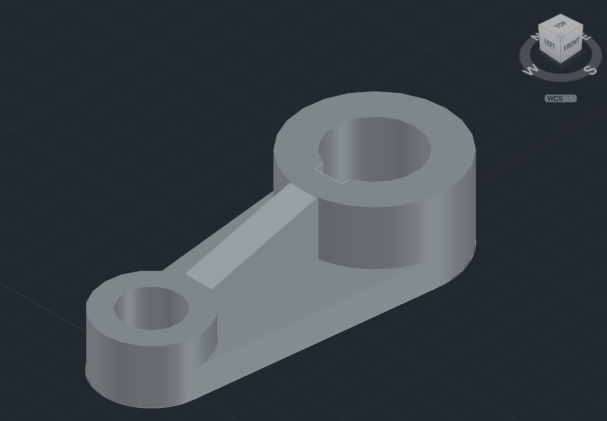
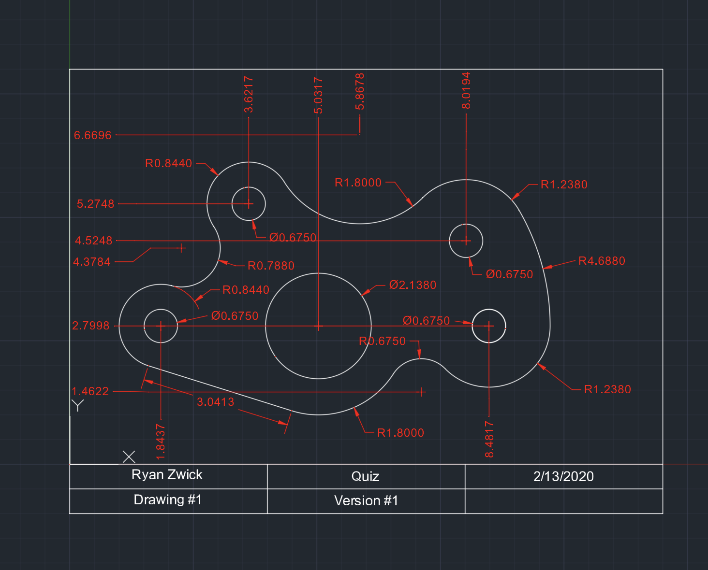

Autocad Projects
Before starting at UConn I took a course in Autocad 2D where I made the 2D views shown below. The focus of the course was 2D visualization of 3D parts with an emphasis on parametric design. As a review I recently made the Cam shown below in 3D.


Here are two projects for the Autocad class that tested our parametric modeling capabilities.
Here's a Geneva wheel I recreated in Autocad that takes a linear input and switches it into a step output.
Here is a building I made following a class for Tekla, but then imported into Autocad for future changes.